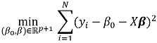

The GLM and GLML1L2 functions perform linear regression analysis for distribution functions using a user-specified distribution family and link function. Their output is input to the GLMPredict_MLE and GLML1L2Predict functions (respectively), which perform generalized linear model prediction on new input data.
The GLM and GLML1L2 functions differ in these ways:
| Function | Supported Distribution Families | Supported Regularization Models | Output Tables |
|---|---|---|---|
| GLM | See Supported Family/Link Function Combinations | None |
|
| GLML1L2 | Binomial, Gaussian | Ridge, LASSO, and elastic net |
|
Regularization
Regularization is a technique for reducing overfitting and thus decreasing the variance of trained models. Generalized linear models (GLM) are fit by minimizing a loss function, such as the sum of squared errors. For example, given a predictor vector X ϵ  p, a response variable Y ϵ , and N observation pairs, you can find model parameters β0 and β with this formula:
p, a response variable Y ϵ , and N observation pairs, you can find model parameters β0 and β with this formula:

These fits can be regularized by adding a penalty function P(β ) to the loss function being minimized. For example:
where λ controls the strength of the penalty function.
For logistic regression, the loss function is based on the log likelihood, as follows:
- The sum of the absolute values of the model parameters:
which is the L1 norm of the model parameters. This regularization technique, also called Least Absolute Shrinkage and Selection Operator (LASSO), was introduced by Robert Tibshirani in 1996. LASSO has the potential to shrink some parameters to zero; therefore, you can also use it for variable selection.
- The sum of the squared values of the model parameters:

which is the L2 norm of the model parameters. This regularization technique is also called ridge regression. With ridge regression, parameter values become smaller as λ increases, but never reach zero.
- Elastic net regularization, which is a linear combination of L1 and L2 normalization:
References
Friedman, J., Hastie, T., and Tibshirani, R. (2010). Regularization Paths for Generalized Linear Models via Coordinate Descent. Journal of Statistical Software, 33(1), 1 - 22.doi (GLM regularization paths article)
Tibshirani, R., Bien, J., Friedman, J., Hastie, T., Simon, N., Taylor, J. and Tibshirani, R. J. (2012), Strong rules for discarding predictors in lasso-type problems. Journal of the Royal Statistical Society: Series B (Statistical Methodology), 74: 245–266. doi:10.1111/j.1467-9868.2011.01004.x